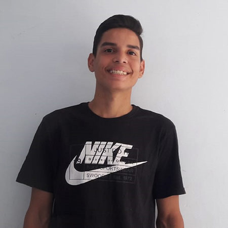

Mostre seu melhor Sorriso ao mundo.
A Turma do Bem é a maior rede de voluntariado especializado do mundo. Transformamos a vida de jovens e mulheres em situação de vulnerabilidade através da saúde bucal.
FAÇA SUA
DOAÇÃO
Contribua para a inclusão social através da saúde bucal. Junte-se à TdB e faça a diferença!
SEJA
VOLUNTÁRIO
Se você é cirurgião-dentista e quer fazer parte da maior rede de voluntariado do mundo, clique aqui.
PRECISO DE
AJUDA
Se você tem entre 11 e 17 anos, possui graves problemas odontológicos e não pode pagar, nós podemos ajudar.
TURMA DO BEM
EM NÚMEROS
+90 mil
jovens atendidos
+1,2 mil
mulheres atendidas
+18 mil
dentistas voluntários

"Eu sentia vergonha de sair e ir à escola, pois precisaria conversar com as pessoas e sorrir. Hoje, converso com os outros sem receios. Graças a eles, sou uma pessoa mais alegre. Sou grato, de coração, por isso."
Pedro Gabriel Lopes, beneficiário da Turma do Bem
TDB
NA MÍDIA
Estadão
G1
Folha
R7
Glamurama